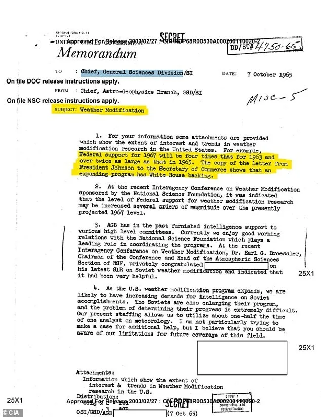
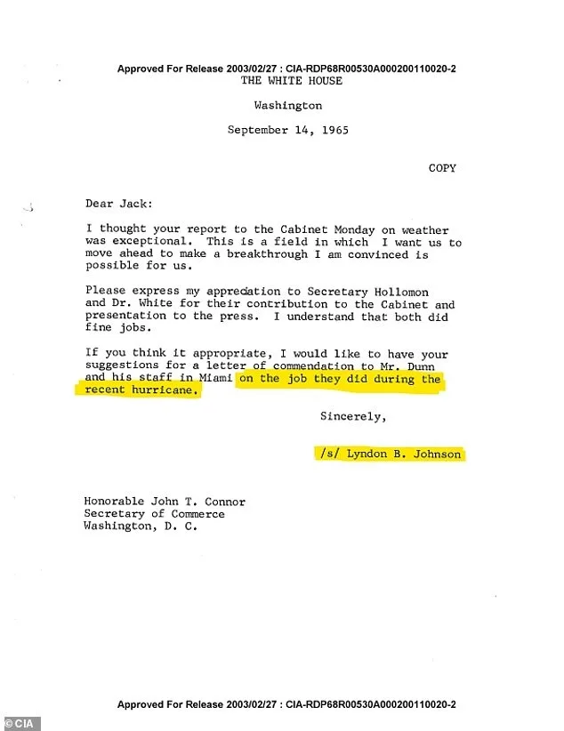

인터넷 이용하다 보면 이런 이야기 본 적 있을 것이다.
미국 CIA가 비행기를 이용해 하늘에 화학물질을 살포하고
이게 기존 비행운과는 다른 형태로 하늘에 남게 된다는 이야기.
소위 컴트레일 이라 불리는 음모론 중 하나다.


그런데 이번에 기밀 해제되어 공개된 CIA 문서에서 관련 이야기가 나왔다.
1965년, 린든 B 존슨 대통령이 허가한 작전이다.
기후 조작을 위해 비행기에서 화학물질을 투하하는 계획을 허가했다는 내용이다.
당연히 시행한 건 CIA.
뭐 음모론에서 떠도는 것처럼 사람을 조종하기 위한 약물은 아니지만
일단 진짜로 뿌린 게 알음알음 입소문으로 퍼져서 소문이 났던 모양이다.

이런 일들이 일어나니 별 말도 안되는 이상한 음모론들을 애들이 다 믿는거지